概观
这一章从介绍生物神经元开始；我们看到人工神经网络是如何受到生物神经网络的启发。我们将研究一个简单的单层神经元(称为感知器)的结构和内部工作方式，并学习如何在TensorFlow中实现它。我们将继续构建多层神经网络来解决更复杂的多类分类任务，并讨论设计神经网络的实际考虑因素。当我们建立深度神经网络时，我们将转移到Keras，用Python建立模块化和易于定制的神经网络模型。到本章结束时，你将擅长建立神经网络来解决复杂的问题。
简介
在前一章中，我们学习了如何在TensorFlow中实现二次方程、线性代数、矩阵乘法等基本数学概念。现在我们已经学习了基础知识，让我们深入研究一下人工神经网络(ann)，它是人工智能和深度学习的核心。
深度学习是机器学习的一个子集。在监督学习中，我们经常使用传统的机器学习技术，如支持向量机或基于树的模型，其中的特征是由人类显式设计的。然而，在深度学习中，该模型在没有人工干预的情况下探索和识别标记数据集的重要特征。受生物神经元启发的人工神经网络具有分层表示，这有助于它们增量式学习标签——从微小的细节到复杂的细节。考虑图像识别的例子:在给定的图像中，人工神经网络可以像识别形状等更复杂的结构一样容易地识别基本细节，如亮区和暗区。虽然神经网络技术在识别图像中的对象等任务方面非常成功，但它们如何做到这一点却是一个黑盒，因为这些特征是隐式学习的。深度学习技术已被证明在处理非常复杂的问题方面非常强大，如语音/图像识别，因此被广泛用于制造无人驾驶汽车、Google Now和许多其他应用程序。
现在我们知道了深度学习技术的重要性，我们将采取务实的一步一步的方法来理解构建基于深度学习的解决方案时的理论和实践考虑的混合。我们将从神经网络的最小组件开始，它是一个人工神经元，也称为感知器，并逐步增加复杂性，以探索多层感知器 ( MLPs )和高级模型，如递归神经网络 ( RNNs )和卷积神经网络 ( CNNs )。
神经网络和感知器的结构
神经元是人类神经系统的基本组成部分，它在全身传递电信号。人类的大脑由数十亿个相互连接的生物神经元组成，它们通过打开或关闭自己来发送微小的二进制电信号，从而不断地相互交流。神经网络的一般含义是相互连接的神经元的网络。在当前的上下文中，我们指的是人工神经网络，它实际上是在生物神经网络上建模的。人工智能一词来源于人类大脑(或任何大脑)中存在自然智能的事实，我们人类正在试图人工模拟这种自然智能。尽管人工神经网络是受生物神经元的启发，但一些高级的神经网络结构，如CNN和RNNs，实际上并不模拟生物神经元的行为。然而，为了便于理解，我们将从生物神经元和人工神经元(感知器)之间的类比开始。
生物神经元的简化版本在图2.1 中表示:
图2.1:生物神经元
这是一个高度简化的表示。有三个主要组件:
- 接收输入信号的树突
- 细胞体，在那里信号以某种形式被处理
- 尾状轴突，神经元通过它将信号传递给下一个神经元
感知器也可以用类似的方式表示，尽管它不是物理实体，而是数学模型。图2.2 显示了一个人工神经元的高级表示:
图2.2:人工神经元的表示
在人工神经元中，如同在生物神经元中一样，有一个输入信号。中心节点合并所有信号，如果输出信号高于某个阈值，则触发输出信号。感知器的更详细的表示如图2.3 所示。这个感知器的每个组件将在下面的章节中解释:
图2.3:感知器的表示
感知器有以下组件:
- 输入层
- 砝码
- 偏见
- 净输入函数
- 激活功能
让我们通过考虑一个OR表数据集来详细了解这些组件及其TensorFlow实现。
Inp ut层
输入数据的每个示例都是通过输入层输入的。参照图2.3 所示的表示法，根据输入示例的大小，节点数将从 x 1到 x m不等，输入数据可以是结构化数据(如CSV文件)或非结构化数据，如图像。这些输入， x 1到 x m，称为特征(m指特征的数量)。让我们用一个例子来说明这一点。
假设数据以如下表格的形式出现:

图2.4:样本输入和输出数据–或表格
这里，神经元的输入是列 x 1和 x 2，它们对应于一行。在这一点上，可能很难理解，但是现在，接受它，数据在训练期间以迭代的方式一次输入一行。我们将用TensorFlow Variable类来表示输入数据和真实标签(输出y)，如下所示:
X = tf.Variable([[0.,0.],[0.,1.],\
[1.,0.],[1.,1.]], \
tf.float32)
y = tf.Variable([0, 1, 1, 1], tf.float32)
重量 hts
权重与每个神经元相关联，输入特征指示每个输入特征在计算下一个节点时应该具有多大的影响。每个神经元将连接到所有的输入特征。在示例中，由于有两个输入( x 1和 x 2)，并且输入层连接到一个神经元，因此将有两个权重与之相关联: w 1和 w 2。重量是一个实数；它可以是正的，也可以是负的，数学上表示为Variable类，如下所示:
number_of_features = x.shape[1]
number_of_units = 1
Weight = tf.Variable(tf.zeros([number_of_features, \
number_of_units]), \
tf.float32)
权重的大小如下:输入特征的数量×输出大小。
偏置
在图2.3 中，偏差用 b 表示，称为加性偏差。每个神经元都有一种偏向。当 x 为零时，即没有信息来自独立变量，那么输出应该偏向于恰好 b 。像权重一样，偏差也是一个实数，网络必须学习偏差值才能得到正确的预测。
在TensorFlow中，偏差大小与输出大小相同，可表示如下:
B = tf.Variable(tf.zeros([1, 1]), tf.float32)
Net 输入功能
净输入函数通常也称为输入函数，可以描述为输入及其相应权重加上偏差的乘积之和。在数学上，它表示如下:
图2.5:数学形式的净输入函数
这里:
- x i:输入数据— x 1至 x m
- w i:重量— w 1至 w m
- b :加性偏差
如您所见，该公式涉及输入及其相关权重和偏差。这可以写成矢量化的形式，我们可以使用矩阵乘法，我们在第一章、深度学习的构建模块中学到了。我们将在开始代码演示时看到这一点。由于所有的变量都是数字，所以网络输入函数的结果只是一个数字，一个实数。使用TensorFlow matmul功能可以轻松实现网络输入功能，如下所示:
z = tf.add(tf.matmul(X, W), B)
W代表权重，X代表输入，B代表偏差。
激活功能(G)
网络输入功能(z)的输出作为输入被馈送到激活功能。根据激活功能的选择，激活功能将网络输入功能(z)的输出压缩到新的输出范围。有多种激活函数，如sigmoid(逻辑)、ReLU和tanh。每种激活功能都有其优缺点。我们将在本章后面深入探讨激活函数。现在，我们将从sigmoid激活函数开始，也称为逻辑函数。使用sigmoid激活功能，线性输出z被压缩到新的输出范围(0，1)。激活函数提供层之间的非线性，这赋予神经网络逼近任何连续函数的能力。
sigmoid函数的数学方程如下，其中 G(z) 是sigmoid函数，右边的方程详细说明了相对于 z 的导数:
图2.6:sigmoid函数的数学形式
正如您在图2.7 中看到的，sigmoid函数是一条或多或少的S形曲线，其值介于0和1之间，无论输入是什么:
图2.7:s形曲线
如果我们设置一个阈值(比如说0.5，我们可以将它转换成二进制输出。任何大于或等于.5的输出被认为是1，任何小于.5的值被认为是0。
TensorFlow中提供了现成的激活功能，如sigmoid。sigmoid函数可在TensorFlow中实现如下:
output = tf.sigmoid(z)
现在，我们已经看到了感知器的结构及其在TensorFlow中的代码表示，让我们将所有组件放在一起，制作一个感知器。
张量流中的感知器
在TensorFlow中，感知器可以通过定义一个简单的函数来实现，如下所示:
def perceptron(X):
z = tf.add(tf.matmul(X, W), B)
output = tf.sigmoid(z)
return output
在很高的层次上，我们可以看到输入数据通过了net input函数。净输入函数的输出被传递给激活函数，激活函数反过来给我们预测的输出。现在，让我们看看每一行代码:
z = tf.add(tf.matmul(X, W), B)
网络输入功能的输出存储在z中。让我们通过将它进一步分解成两个部分来看看我们是如何得到那个结果的，也就是包含在tf.matmul中的矩阵乘法部分和包含在tf.add中的加法部分。
假设我们将X和W的矩阵乘法结果存储在一个名为m的变量中:
m = tf.matmul(X, W)
现在，让我们考虑一下我们是如何得到这个结果的。例如，假设X是一个行矩阵，就像【X1 X2】，而W是一个列矩阵，如下所示:

图2.8:列矩阵
回想一下上一章tf.matmul将执行矩阵乘法。所以，结果是这样的:
m = x1*w1 + x2*w2
然后，我们将输出m与偏置B相加，如下所示:
z = tf.add(m, B)
请注意，我们在上一步中所做的与两个变量m和b的简单相加是一样的:
m + b
因此，最终输出是:
z = x1*w1 + x2*w2 + b
z将是净输入函数的输出。
现在，让我们考虑下一行:
output= tf.sigmoid(z)
正如我们之前了解到的，tf.sigmoid是sigmoid函数的一个现成实现。在前一行中计算的净输入函数的输出(z)作为输入输入到sigmoid函数。sigmoid函数的结果是感知器的输出，在0到1的范围内。在训练过程中，我们将成批地将数据输入到这个函数中，这个函数将计算预测值，这将在本章后面解释。
练习2.01:感知器的实现
在本练习中，我们将在TensorFlow中为一个OR表实现感知器。让我们在TensorFlow中设置输入数据，冻结感知器的设计参数:
- 让我们导入必要的包，在我们的例子中是
tensorflow:import tensorflow as tf
- Set the input data and labels of the
ORtable data in TensorFlow:X = tf.Variable([[0.,0.],[0.,1.],\ [1.,0.],[1.,1.]], \ dtype=tf.float32) print(X)正如您在输出中看到的，我们将有一个4 × 2的输入数据矩阵:
<tf.Variable 'Variable:0' shape=(4, 2) dtype=float32, numpy=array([[0., 0.], [0., 1.], [1., 0.], [1., 1.]], dtype=float32)> - We will set the actual labels in TensorFlow and use the
reshape()function to reshape theyvector into a 4 × 1 matrix:y = tf.Variable([0, 1, 1, 1], dtype=tf.float32) y = tf.reshape(y, [4,1]) print(y)
输出是一个4 × 1矩阵，如下所示:
tf.Tensor( [[0.] [1.] [1.] [1.]], shape=(4, 1), dtype=float32)
- Now let's design parameters of a perceptron.
神经元数量(单位)= 1
特征数(输入)= 2(实例数×特征数)
激活函数将是sigmoid函数，因为我们正在进行二元分类:
NUM_FEATURES = X.shape[1] OUTPUT_SIZE = 1
在前面的代码中，
X.shape[1]将等于2(由于索引从零开始，1是指第二个索引，即2)。 - Define the connections weight matrix in TensorFlow:
W = tf.Variable(tf.zeros([NUM_FEATURES, \ OUTPUT_SIZE]), \ dtype=tf.float32) print(W)权重矩阵本质上是一个列矩阵，如下图所示。其尺寸如下:特征(列)数量×输出尺寸:
<tf.Variable 'Variable:0' shape=(2, 1) dtype=float32, \ numpy=array([[0.], [0.]], dtype=float32)>
- Now create the variable for the bias:
B = tf.Variable(tf.zeros([OUTPUT_SIZE, 1]), dtype=tf.float32) print(B)
每个神经元只有一个偏差，所以在这种情况下，偏差只是单元素数组形式的一个数字。然而，如果我们有一层10个神经元，那么它将是一个由10个数字组成的数组——每个神经元一个数字。
这将产生一个只有一个元素的0行矩阵，如下所示:
<tf.Variable 'Variable:0' shape=(1, 1) dtype=float32, numpy=array([[0.]], dtype=float32)>
- Now that we have the weights and bias, the next step is to perform the computation to get the net input function, feed it to the activation function, and then get the final output. Let's define a function called
perceptronto get the output:def perceptron(X): z = tf.add(tf.matmul(X, W), B) output = tf.sigmoid(z) return output print(perceptron(X))输出将是一个4 × 1的数组，包含我们的感知器的预测:
tf.Tensor( [[0.5] [0.5] [0.5] [0.5]], shape=(4, 1), dtype=float32)
正如我们所看到的，预测并不十分准确。我们将在接下来的章节中学习如何改进结果。
注意
要访问该特定部分的源代码，请参考https://packt.live/3feF7MO。
你也可以在https://packt.live/2CkMiEE的在线运行这个例子。您必须执行整个笔记本才能获得想要的结果。
在这个练习中，我们实现了一个感知器，它是单个人工神经元的数学实现。请记住，它只是模型的实现；我们没有进行任何培训。在下一节，我们将看到如何训练感知器。
训练一个感知器
为了训练一个感知器，我们需要以下组件:
- 数据表示法
- 层
- 神经网络表示
- 损失函数
- 【计算机】优化程序
- 训练循环
在上一节中，我们介绍了大多数前面的组件:perceptron()，它使用一个线性层和一个sigmoid层来执行预测。我们在上一节中使用输入数据和初始权重和偏差所做的工作称为正向传播。实际的神经网络训练包括两个阶段:前向传播和反向传播。我们将在接下来的几个步骤中详细探讨它们。让我们从更高的层面来看培训过程:
- 神经网络遍历所有训练示例的训练迭代称为一个时期。这是为了训练神经网络而需要调整的超参数之一。
- 在每一次传递中，神经网络进行前向传播，数据从输入传播到输出。如练习2.01 、感知器实现所示，输入被馈送到感知器。输入数据通过净输入函数和激活函数产生预测输出。将预测输出与标签或地面实况进行比较，并计算误差或损失。
- 为了使神经网络学习，学习是调整权重和偏差以便做出正确的预测，需要有一个损失函数，它将计算实际标签和预测标签之间的误差。
- 为了最小化神经网络中的误差，训练回路需要一个优化器，它将在损失函数的基础上最小化损失。
- 一旦计算出误差，神经网络就可以看到网络的哪些节点造成了误差，以及造成了多大的误差。为了在下一个时期更好地预测，这是必不可少的。这种向后传播误差的方式被称为向后传播(反向传播)。反向传播使用微积分中的链式法则以相反的顺序传播误差(误差梯度),直到误差到达输入层。当它通过网络传播误差时，它使用梯度下降，通过利用之前计算的误差梯度对网络中的权重和偏差进行微调。
这种循环一直持续到损耗最小。
让我们实现我们在TensorFlow中讨论过的理论。重温练习2.01 、感知器实现、中的代码，其中我们创建的感知器只是向前传递了一次。我们得到了以下预测，我们看到我们的感知机没有学到任何东西:
tf.Tensor( [[0.5] [0.5] [0.5] [0.5]], shape=(4, 1), dtype=float32)
为了让我们的感知机学习，我们需要额外的组件，如训练循环、损失函数和优化器。让我们看看如何在TensorFlow中实现这些组件。
TensorFlow中的训练过程
在下一个练习中，当我们训练我们的模型时，我们将使用一个随机梯度下降 ( SGD )优化器来最小化损失。TensorFlow提供了一些现成的更高级的优化器。我们将在后面的章节中讨论它们各自的优缺点。以下代码将使用TensorFlow实例化随机梯度下降优化器:
learning_rate = 0.01 optimizer = tf.optimizers.SGD(learning_rate)
perceptron函数负责向前传播。对于误差的反向传播，我们使用了一个优化器。Tf.optimizers.SGD创建一个优化器的实例。SGD将根据输入数据更新每个示例的网络参数(权重和偏差)。我们将在本章后面更详细地讨论梯度下降优化器的功能。我们还将讨论0.01参数的重要性，它被称为学习率。学习率是SGD为达到损失函数的全局最优值而采取的步长。学习率是为了训练神经网络而需要调整的另一个超参数。
以下代码可用于定义历元、训练循环和损失函数:
no_of_epochs = 1000
for n in range(no_of_epochs):
loss = lambda:abs(tf.reduce_mean(tf.nn.\
sigmoid_cross_entropy_with_logits\
(labels=y,logits=perceptron(X))))
optimizer.minimize(loss, [W, B])
在训练循环中，使用损失函数来计算损失，损失函数被定义为λ函数。
tf.nn.sigmoid_cross_entropy_with_logits函数计算每个观察值的损失值。它需要两个参数:Labels = y和logit = perceptron(x)。
perceptron(X)返回预测值，该值是输入x向前传播的结果。这将与存储在y中的相应标签值进行比较。使用Tf.reduce_mean计算平均值，并取数值。使用abs功能忽略该符号。Optimizer.minimize获取损失值并调整权重和偏差，作为误差反向传播的一部分。
使用新的权重和偏差值再次执行前向传播。并且这个向前和向后的过程持续我们定义的迭代次数。
在反向传播期间，只有当损失小于前一个周期时，才更新权重和偏差。否则，权重和偏差保持不变。通过这种方式，优化器确保即使它遍历所需的迭代次数，它也只存储损失最小的w和b的值。
我们已经将训练的历元数设置为1，000次迭代。没有设定时期数的经验法则，因为时期数是一个超参数。但是我们如何知道什么时候培训成功了呢？
当我们可以看到权重和偏差的值已经改变时，我们可以断定训练已经发生。假设我们对在练习2.01 、感知器实现中看到的OR数据使用了一个训练循环，我们会看到权重大致等于如下:
[[0.412449151] [0.412449151]]
偏差大概是这样的:
0.236065879
当网络已经学习，即权重和偏差已经更新，我们可以使用来自scikit-learn包的accuracy_score来查看它是否正在进行准确的预测。我们可以用它来衡量预测的准确性，如下所示:
from sklearn.metrics import accuracy_score print(accuracy_score(y, ypred))
这里，accuracy_score采用两个参数—标签值(y)和预测值(ypred)—并测量精度。假设结果是1.0。这意味着感知器是100%准确的。
在下一个练习中，我们将训练我们的感知器来执行二元分类。
练习 2.02:感知器作为二元分类器
在上一节中，我们学习了如何训练一个感知器。在这个练习中，我们将训练我们的感知器来逼近一个稍微复杂一点的函数。我们将使用两类随机生成的外部数据:类0和类1。我们训练过的感知器应该能够根据类别对随机数进行分类:
注意
数据保存在名为data.csv的CSV文件中。你可以通过访问https://packt.live/2BVtxIf从GitHub下载该文件。
- Import the required libraries:
import tensorflow as tf import pandas as pd from sklearn.metrics import confusion_matrix from sklearn.metrics import accuracy_score import matplotlib.pyplot as plt %matplotlib inline
除了
tensorflow，我们将需要pandas从CSV文件中读取数据，confusion_matrix和accuracy_score在训练后测量我们的感知机的准确性，matplotlib可视化数据。 - 从
data.csv文件中读取数据。它应该与运行本练习代码的Jupyter笔记本文件位于同一路径。否则，您必须在执行代码之前更改代码中的路径:df = pd.read_csv('data.csv') - Examine the data:
df.head()
输出如下所示:
图2.10:数据帧的内容
如您所见，数据有三列。
x1和x2是特征，label栏包含每个观察的标签0或1。查看这类数据的最佳方式是通过散点图。 - Visualize the data by plotting it using
matplotlib:plt.scatter(df[df['label'] == 0]['x1'], \ df[df['label'] == 0]['x2'], \ marker='*') plt.scatter(df[df['label'] == 1]['x1'], \ df[df['label'] == 1]['x2'], marker='<')输出如下所示:
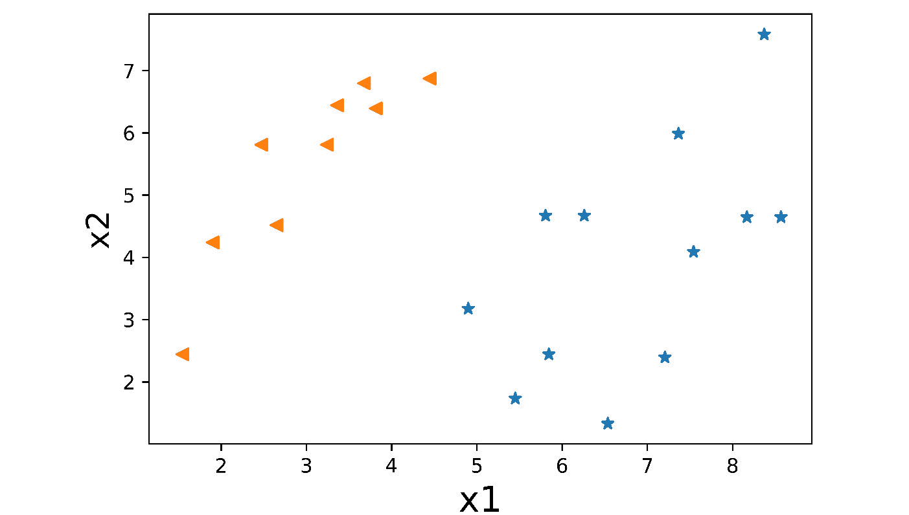图2.11:外部数据的散点图
这显示了由两个不同形状显示的两个不同的数据类别。带有标签
0的数据用星号表示，而带有标签1的数据用三角形表示。 - Prepare the data. This step is not unique to neural networks; you must have seen it in regular machine learning as well. Before submitting the data to a model for training, you split it into features and labels:
X_input = df[['x1','x2']].values y_label = df[['label']].values
x_input包含特性，x1和x2。最后的值将其转换为矩阵格式，这是创建张量时期望的输入。y_label包含矩阵格式的标签。 - 为特征和标签创建张量流变量，并将其类型转换为
float:x = tf.Variable(X_input, dtype=tf.float32) y = tf.Variable(y_label, dtype=tf.float32)
- The rest of the code is for the training of the perceptron, which we saw in Exercise 2.01, Perceptron Implementation:
Exercise2.02.ipynb Number_of_features = 2 Number_of_units = 1 learning_rate = 0.01 # weights and bias weight = tf.Variable(tf.zeros([Number_of_features, \ Number_of_units])) bias = tf.Variable(tf.zeros([Number_of_units])) #optimizer optimizer = tf.optimizers.SGD(learning_rate) def perceptron(x): z = tf.add(tf.matmul(x,weight),bias) output = tf.sigmoid(z) return output The complete code for this step can be found at https://packt.live/3gJ73bY.注意
上面代码片段中的
#符号表示代码注释。注释被添加到代码中以帮助解释特定的逻辑。 - Display the values of
weightandbiasto show that the perceptron has been trained:tf.print(weight, bias)
输出如下所示:
[[-0.844034135] [0.673354745]] [0.0593947917]
- 传递输入数据检查感知器是否正确分类:
ypred = perceptron(x)
- 四舍五入输出，将其转换为二进制格式:
ypred = tf.round(ypred)
- Measure the accuracy using the
accuracy_scoremethod, as we did in the previous exercise:acc = accuracy_score(y.numpy(), ypred.numpy()) print(acc)
输出如下所示:
1.0
感知器给出100%的准确率。
- The confusion matrix helps to get the performance measurement of a model. We will plot the confusion matrix using the
scikit-learnpackage.cnf_matrix = confusion_matrix(y.numpy(), \ ypred.numpy()) print(cnf_matrix)输出如下所示:
[[12 0] [ 0 9]]
所有的数字都是沿着对角线的，也就是12个对应于0类的值和9个对应于1类的值被我们训练好的感知器(已经达到100%的准确率)正确分类。
注意
要访问该特定部分的源代码，请参考https://packt.live/3gJ73bY。
你也可以在https://packt.live/2DhelFw在线运行这个例子。您必须执行整个笔记本才能获得想要的结果。
在这个练习中，我们将我们的感知器训练成一个二元分类器，它做得相当好。在下一个练习中，我们将看到如何创建一个多类分类器。
多类分类器
可以处理两个类的分类器被称为二元分类器，就像我们在前面的练习中看到的那样。能够处理两个以上类的分类器被称为多类分类器。我们不能用单个神经元构建多类分类器。现在我们从一个神经元转移到一层多个神经元，这是多类分类器所需要的。
多个神经元的单层可以被训练成多类分类器。这里详细介绍了一些要点。你需要和班级数量一样多的神经元；也就是说，对于3类分类器，你需要3个神经元；对于10类分类器，你需要10个神经元，等等。
正如我们在二元分类中看到的，我们使用sigmoid(逻辑层)来获得范围为0到1的预测。在多类分类中，我们使用一种特殊类型的激活函数，称为 Softmax 激活函数，以获得每个类的概率总和为1。对于多类设置中的sigmoid函数，概率的总和不一定等于1，因此Softmax是首选。
在我们实现多类分类器之前，让我们探索一下Softmax激活函数。
soft max激活功能
Softmax函数也称为归一化指数函数。正如单词 normalized 所暗示的，Softmax函数将输入归一化为一个总和为1的概率分布。在数学上，它表示如下:
图2.12:soft max函数的数学形式
为了理解Softmax是做什么的，让我们使用TensorFlow内置的softmax函数，看看输出。
因此，对于下面的代码:
values = tf.Variable([3,1,7,2,4,5], dtype=tf.float32) output = tf.nn.softmax(values) tf.print(output)
输出将是:
[0.0151037546 0.00204407098 0.824637055 0.00555636082 0.0410562605 0.111602485]
正如您在输出中看到的，values输入被映射到一个总和为1的概率分布。请注意，7(原始输入值中的最高值)获得了最高的权重，0.824637055。这就是Softmax函数的主要用途:关注最大值并抑制低于最大值的值。此外，如果我们对输出求和，其总和约为1。
为了更详细地说明这个例子，假设我们想要构建一个包含3个类的多类分类器。我们需要3个神经元连接到Softmax激活功能:
图2.13:在多类分类设置中使用的Softmax激活功能
如图2.13 所示，x 1、x 2、x 3是输入特征，它们通过三个神经元中每一个的网络输入函数，具有与之相关的权重和偏差(W i，j和b i)。最后，神经元的输出被馈送到公共的Softmax激活函数，而不是单独的sigmoid函数。Softmax激活函数给出了3个类别的概率:P1、P2和P3。由于Softmax层的存在，这三个概率的总和将为1。
正如我们在上一节中看到的，Softmax突出显示最大值，并抑制其余的值。假设训练一个神经网络，将输入分为三类，对于给定的一组输入，输出为类2；那么它会说P2具有最高值，因为它通过了Softmax层。如下图所示，P2的值最高，这意味着预测是正确的:
图2.14:P2概率最高
一个相关的概念是一键编码。由于我们有三个不同的类，class1、class2和class3，我们需要将类标签编码成一种更容易处理的格式；因此，在应用一键编码后，我们将看到以下输出:
图2.15:三个类的一键编码数据
这使得结果快速且易于解释。在这种情况下，具有最高值的输出被设置为1，所有其他输出被设置为0。前面示例的独热码编码输出如下所示:
图2.16:独热编码输出概率
训练数据的标签也需要被一次性编码。如果它们具有不同的格式，则需要在训练模型之前将其转换为one-hot-encoded格式。让我们做一个使用一键编码的多类分类练习。
练习2.03: M 使用感知器的多类分类
为了执行多类分类，我们将使用虹膜数据集(https://archive.ics.uci.edu/ml/datasets/Iris)，它有3个类，每个类50个实例，其中每个类指一种类型的虹膜。我们将使用Softmax激活功能获得一个由三个神经元组成的单层:
注意
你可以使用这个链接从GitHub下载数据集:【https://packt.live/3ekiBBf】T21。
- Import the required libraries:
import tensorflow as tf import pandas as pd from sklearn.metrics import confusion_matrix from sklearn.metrics import accuracy_score import matplotlib.pyplot as plt %matplotlib inline from pandas import get_dummies
您必须熟悉所有这些导入，因为它们在之前的练习中使用过，除了
get_dummies。这个函数将给定的标签数据转换成相应的独热编码格式。 - 加载
iris.csv数据:df = pd.read_csv('iris.csv') - Let's examine the first five rows of the data:
df.head()
输出如下所示:
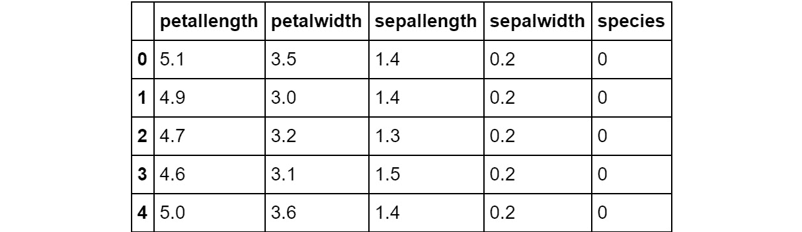图2.17:数据帧的内容
- Visualize the data by using a scatter plot:
plt.scatter(df[df['species'] == 0]['sepallength'],\ df[df['species'] == 0]['sepalwidth'], marker='*') plt.scatter(df[df['species'] == 1]['sepallength'],\ df[df['species'] == 1]['sepalwidth'], marker='<') plt.scatter(df[df['species'] == 2]['sepallength'], \ df[df['species'] == 2]['sepalwidth'], marker='o')结果将如下图所示。 x 轴表示萼片长度， y 轴表示萼片宽度。图中的形状代表鸢尾属的三个物种，setosa(星形)、versicolor(三角形)和virginica(圆形):
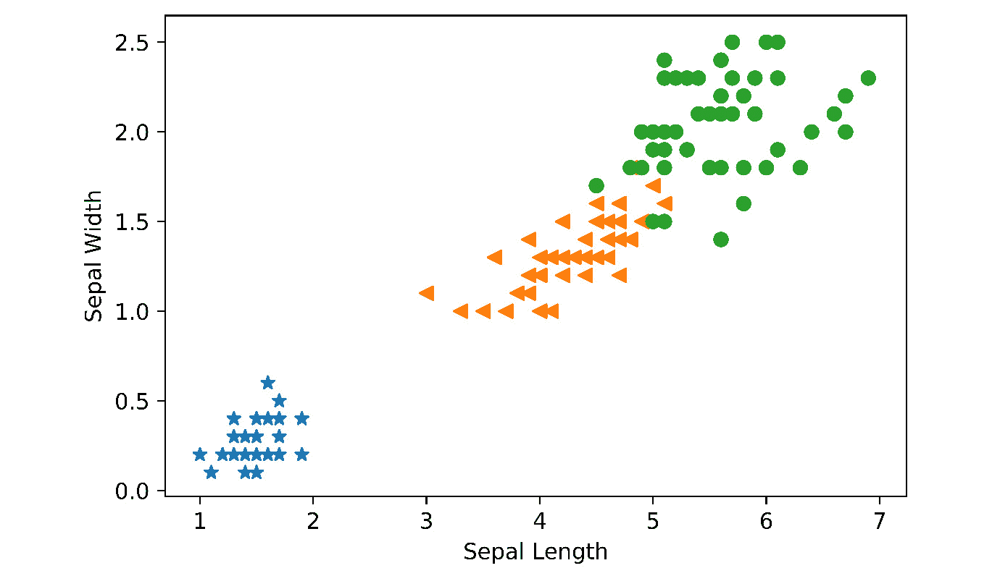图2.18:虹膜数据散点图
在可视化中可以看到，有三个类别，用不同的形状表示。
- Separate the features and the labels:
x = df[['petallength', 'petalwidth', \ 'sepallength', 'sepalwidth']].values y = df['species'].valuesvalues将特征转换成矩阵格式。 - Prepare the data by doing one-hot encoding on the classes:
y = get_dummies(y) y = y.values
get_dummies(y)会将标签转换为一键编码格式。 - 创建一个变量来加载特性，并将其类型转换为
float32:x = tf.Variable(x, dtype=tf.float32)
- Implement the
perceptronlayer with three neurons:Number_of_features = 4 Number_of_units = 3 # weights and bias weight = tf.Variable(tf.zeros([Number_of_features, \ Number_of_units])) bias = tf.Variable(tf.zeros([Number_of_units])) def perceptron(x): z = tf.add(tf.matmul(x, weight), bias) output = tf.nn.softmax(z) return output代码看起来非常类似于单个感知器的实现。只有
Number_of_units参数被设置为3。因此，权重矩阵将是4×3，偏差矩阵将是1×3。另一个变化是激活功能:
Output=tf.nn.softmax(x)我们用的是
softmax而不是sigmoid。 - 创建一个
optimizer的实例。我们将使用Adam优化器。此时，你可以把Adam看成是收敛更快的梯度下降的改进版。我们将在后面的章节中详细介绍:optimizer = tf.optimizers.Adam(.01)
- Define the training function:
def train(i): for n in range(i): loss=lambda: abs(tf.reduce_mean\ (tf.nn.softmax_cross_entropy_with_logits(\ labels=y, logits=perceptron(x)))) optimizer.minimize(loss, [weight, bias])同样，除了损失函数之外，代码看起来非常类似于单神经元实现。我们用
softmax_cross_entropy_with_logits代替sigmoid_cross_entropy_with_logits。 - 运行
1000迭代的训练:train(1000)
- Print the values of the weights to see if they have changed. This is also an indication that our perceptron is learning:
tf.print(weight)
输出显示了我们的感知器的学习权重:
[[0.684310317 0.895633 -1.0132345] [2.6424644 -1.13437736 -3.20665336] [-2.96634197 -0.129377216 3.2572844] [-2.97383809 -3.13501668 3.2313652]]
- To test the accuracy, we feed the features to predict the output and then calculate the accuracy using
accuracy_score, like in the previous exercise:ypred=perceptron(x) ypred=tf.round(ypred) accuracy_score(y, ypred)
输出是:
0.98
它给出了98%的准确率，这是相当不错的。
注意
要访问该特定部分的源代码，请参考https://packt.live/2Dhes3U的。
你也可以在https://packt.live/3iJJKkm在线运行这个例子。您必须执行整个笔记本才能获得想要的结果。
在这个练习中，我们使用感知器进行了多类分类。让我们在下一节对手写数字识别数据集进行一个更复杂、更有趣的案例研究。
MNIST案例研究
现在我们已经看到了如何训练单个神经元和单层神经元，让我们来看看更真实的数据。MNIST是一个著名的案例。在下一个练习中，我们将创建一个10类分类器来对MNIST数据集进行分类。但是，在此之前，您应该对MNIST数据集有一个很好的了解。
修改后的国家标准与技术研究院 ( MNIST )指的是Yann LeCun领导的团队在NIST工作过的修改后的数据集。该项目旨在使用神经网络进行手写数字识别。
在开始编写代码之前，我们需要理解数据集。MNIST数据集被集成到张量流库中。它由70，000张0到9的手写图像组成:
图2.19:手写数字
当我们说图像时，你可能会认为这些是JPEG文件，但它们不是。它们实际上是以像素值的形式存储的。就计算机而言，图像就是一串数字。这些数字是范围从0到255的像素值。这些图像的尺寸都是28 x 28。图像以28 x 28矩阵的形式存储，每个单元包含从0到255的实数。这些是灰度图像(俗称黑白)。0表示白色，1表示全黑，介于两者之间的值表示特定的灰色阴影。MNIST数据集被分成60，000幅训练图像和10，000幅测试图像。
每个图像都有一个从0到9的标签。在下一个练习中，让我们建立一个10级分类器来对手写MNIST图像进行分类。
练习2.04:筛选手写数字
在本练习中，我们将使用Softmax激活函数构建一个由10个神经元组成的单层10类分类器。它将有一个784像素的输入层:
- 导入所需的库和包，就像我们在前面的练习中所做的一样:
import tensorflow as tf import pandas as pd from sklearn.metrics import accuracy_score import matplotlib.pyplot as plt %matplotlib inline from pandas import get_dummies
- 创建MNIST数据集的实例:
mnist = tf.keras.datasets.mnist
- 加载MNIST数据集的
train和test数据:(train_features, train_labels), (test_features, test_labels) = \ mnist.load_data()
- 数据归一化:
train_features, test_features = train_features / 255.0, \ test_features / 255.0
- 将二维图像展平为行矩阵。因此，使用
reshape函数:x = tf.reshape(train_features,[60000, 784])
将一个28 × 28的像素展平为784 - 用特性创建一个
Variable，并将其类型化为float32:x = tf.Variable(x) x = tf.cast(x, tf.float32)
- 创建标签的一次性编码，并将其转换为矩阵:
y_hot = get_dummies(train_labels) y = y_hot.values
- 创建具有
10个神经元的单层神经网络，并对其进行1000次迭代训练:Exercise2.04.ipynb #defining the parameters Number_of_features = 784 Number_of_units = 10 # weights and bias weight = tf.Variable(tf.zeros([Number_of_features, \ Number_of_units])) bias = tf.Variable(tf.zeros([Number_of_units])) The complete code for this step can be accessed from https://packt.live/3efd7Yh.
- 准备测试数据以测量准确度:
# Prepare the test data to measure the accuracy. test = tf.reshape(test_features, [10000, 784]) test = tf.Variable(test) test = tf.cast(test, tf.float32) test_hot = get_dummies(test_labels) test_matrix = test_hot.values
- 通过网络传递测试数据来运行预测:
ypred = perceptron(test) ypred = tf.round(ypred)
- Calculate the accuracy:
accuracy_score(test_hot, ypred)
预测精度为:
0.9304
注意
要访问该特定部分的源代码，请参考https://packt.live/3efd7Yh。
你也可以在https://packt.live/2Oc83ZW在线运行这个例子。您必须执行整个笔记本才能获得想要的结果。
在本练习中，我们看到了如何创建单层多神经元神经网络，并将其训练为多类分类器。
下一步是建立一个多层神经网络。然而，在此之前，我们必须了解Keras API，因为我们使用Keras来构建密集的神经网络。
Keras作为高杠杆 el API
在TensorFlow 1.0中，有几个API，如Estimator、Contrib和layers。在TensorFlow 2.0中，Keras与TensorFlow紧密集成，它提供了一个用户友好、模块化、可组合且易于扩展的高级API，以便构建和训练深度学习模型。这也使得为神经网络开发代码变得更加容易。让我们看看它是如何工作的。
练习2.05:使用Keras进行二进制分类
在本练习中，我们将使用Keras API实现一个非常简单的带有单个神经元的二元分类器。我们将使用在练习2.02 、感知器中使用的同一个data.csv文件作为二元分类器:
注意
可以通过访问以下GitHub链接从GitHub下载数据集:https://packt.live/2BVtxIf.
- Import the required libraries:
import tensorflow as tf import pandas as pd import matplotlib.pyplot as plt %matplotlib inline # Import Keras libraries from tensorflow.keras.models import Sequential from tensorflow.keras.layers import Dense
在代码中，
Sequential是我们将使用的Keras模型的类型，因为向它添加层非常容易。Dense是将要添加的图层类型。这些是常规的神经网络层，与卷积层或稍后将使用的汇集层相反。 - 导入数据:
df = pd.read_csv('data.csv') - Inspect the data:
df.head()
以下是输出结果:
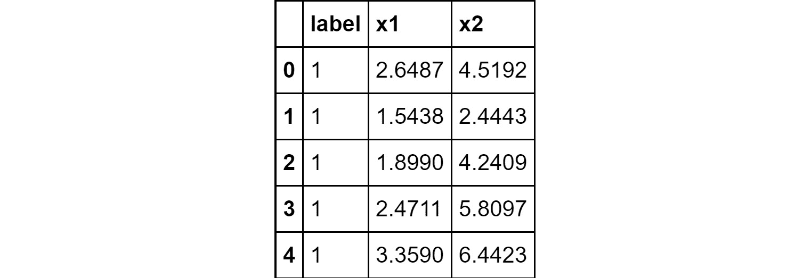图2.20:数据帧的内容
- Visualize the data using a scatter plot:
plt.scatter(df[df['label'] == 0]['x1'], \ df[df['label'] == 0]['x2'], marker='*') plt.scatter(df[df['label'] == 1]['x1'], \ df[df['label'] == 1]['x2'], marker='<')结果图如下，其中 x 轴表示
x1值，y轴表示x2值: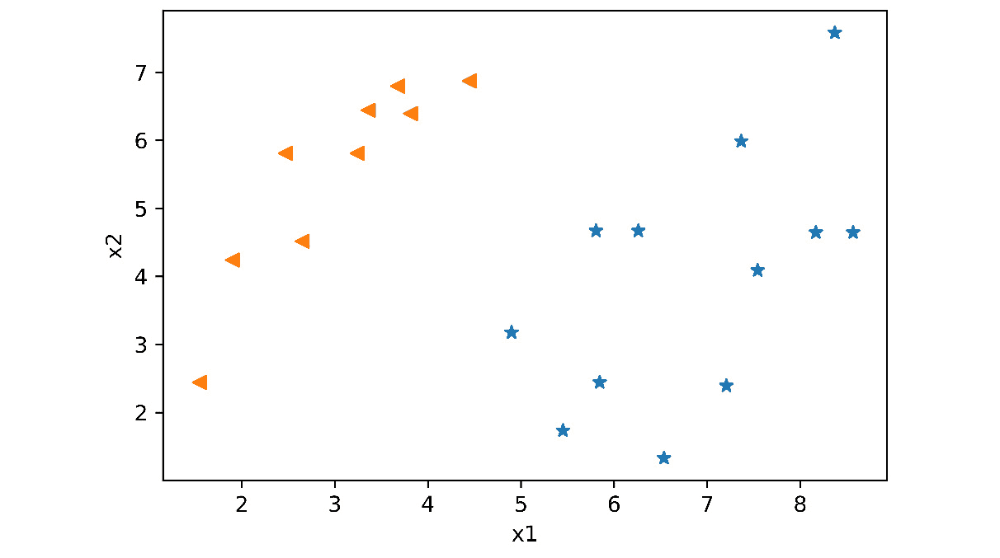图2.21:数据的散点图
- 通过分离特征和标签并设置
tf变量来准备数据:x_input = df[['x1','x2']].values y_label = df[['label']].values
- Create a neural network model consisting of a single layer with a neuron and a sigmoid activation function:
model = Sequential() model.add(Dense(units=1, input_dim=2, activation='sigmoid'))
mymodel.add(Dense())中的参数如下:units为该层神经元的个数；input_dim是特征的数量，在本例中是2；而activation就是sigmoid。 - Once the model is created, we use the
compilemethod to pass the additional parameters that are needed for training, such as the type of the optimizer, the loss function, and so on:model.compile(optimizer='adam', \ loss='binary_crossentropy',\ metrics=['accuracy'])在这种情况下，我们使用的是
adam优化器，它是梯度下降优化器的增强版本，损失函数是binary_crossentropy，因为这是一个二元分类器。metrics参数几乎总是设置为['accuracy']，用于显示训练过程中的历元数、训练损失、训练精度、测试损失、测试精度等信息。 - The model is now ready to be trained. However, it is a good idea to check the configuration of the model by using the
summaryfunction:model.summary()
输出如下所示:
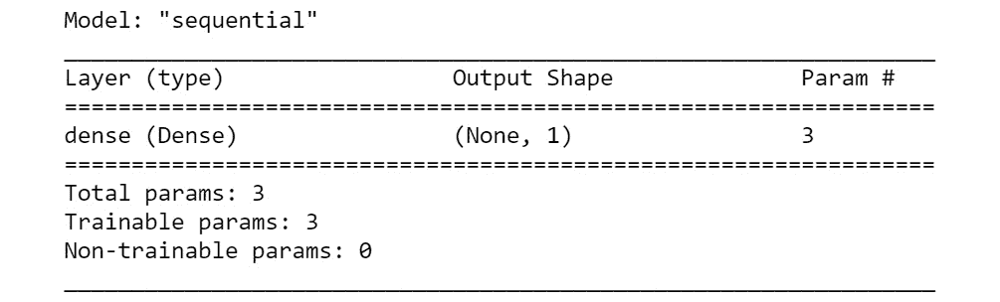图2.22:顺序模型总结
- Train the model by calling the
fit()method:model.fit(x_input, y_label, epochs=1000)
它将特征和标签以及历元数作为数据参数，在本例中是
1000。模型将开始训练，并持续提供如下所示的状态: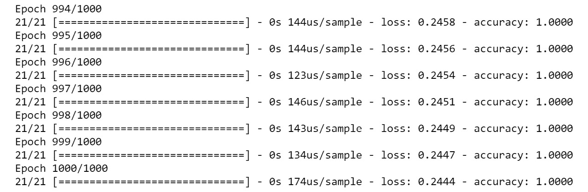图2.23:使用Keras对训练日志建模
- We will evaluate our model using Keras's
evaluatefunctionality:model.evaluate(x_input, y_label)
输出如下所示:
21/21 [==============================] - 0s 611us/sample - loss: 0.2442 - accuracy: 1.0000 [0.24421504139900208, 1.0]
正如你所看到的，我们的Keras模型能够很好地训练，因为我们的准确率是100%。
注意
要访问该特定部分的源代码，请参考https://packt.live/2ZVV1VY。
你也可以在https://packt.live/38CzhTc在线运行这个例子。您必须执行整个笔记本才能获得想要的结果。
在这个练习中，我们学习了如何使用Keras构建一个感知器。正如您所看到的，Keras使代码更加模块化，可读性更好，参数也更容易调整。在下一节中，我们将看到如何使用Keras构建多层或深度神经网络。
多层神经网络或深度神经网络
在前面的示例中，我们开发了一个单层神经网络，通常称为浅层神经网络。这方面的图表如下:
图2.24:浅层神经网络
一层神经元不足以解决更复杂的问题，如人脸识别或物体检测。你需要堆叠多层。这通常被称为创建深度神经网络。这方面的图表如下:
图2.25:深度神经网络
在我们进入代码之前，让我们试着理解它是如何工作的。输入数据被馈送到第一层中的神经元。必须注意的是，每一个输入都馈入第一层的每一个神经元，每一个神经元都有一个输出。第一层中每个神经元的输出被馈送到第二层中的每个神经元。第二层中每个神经元的输出被馈送到第三层中的每个神经元，依此类推。
这就是为什么这种网络也被称为密集神经网络或全连接神经网络。还有其他类型的具有不同工作方式的神经网络，如CNN，但这是我们将在下一章讨论的内容。每层神经元的数量没有固定的规则。这通常是在一个被称为超参数调整的过程中通过反复试验来确定的(我们将在本章后面学习)。然而，当谈到最后几层的神经元数量时，有一些限制。最后一层的配置确定如下:
图2.26:最后一层配置
ReLU激活功能
O 在我们实现深度神经网络的代码之前，要做的最后一件事是了解ReLU激活函数。这是多层神经网络中最常用的激活函数之一。
ReLU 是整流线性单元的简称。ReLU函数的输出总是大于或等于0的非负值:
图2.27: ReLU激活功能
ReLU的数学表达式为:
图2.28: ReLU激活功能
ReLU比sigmoid激活函数收敛得更快，因此它是迄今为止使用最广泛的激活函数。几乎每个深度神经网络都使用ReLU。它用于除最后一层之外的所有层，最后一层使用sigmoid或Softmax。
ReLU激活功能由TensorFlow开箱即用。为了查看它是如何实现的，让我们给一个ReLU函数一些样本输入值，并查看输出:
values = tf.Variable([1.0, -2., 0., 0.3, -1.5], dtype=tf.float32) output = tf.nn.relu(values) tf.print(output)
输出如下所示:
[1 0 0 0.3 0]
如您所见，所有正值都被保留，负值被抑制为零。让我们在下一个练习中使用这个ReLU激活函数来执行一个多层二元分类任务。
练习2.06:多层二元分类器
在本练习中，我们将使用我们在练习2.02 、感知器中使用的data.csv文件作为二进制分类器来实现一个多层二进制分类器。
我们将使用以下配置的深度神经网络构建一个二元分类器。将有一个具有2个节点和2个隐藏层的输入层，第一个具有50个神经元，第二个具有20个神经元，最后一个神经元进行属于任何二元类的最终预测:
注意
可以使用以下链接从GitHub下载数据集:https://packt.live/2BVtxIf。
- 导入所需的库和包:
import tensorflow as tf import pandas as pd import matplotlib.pyplot as plt %matplotlib inline ##Import Keras libraries from tensorflow.keras.models import Sequential from tensorflow.keras.layers import Dense
- Import and inspect the data:
df = pd.read_csv('data.csv') df.head()输出如下所示:
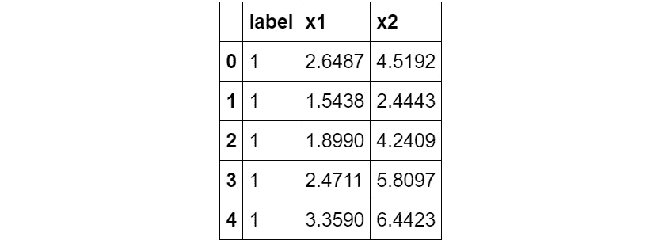图2.29:数据的前五行
- Visualize the data using a scatter plot:
plt.scatter(df[df['label'] == 0]['x1'], \ df[df['label'] == 0]['x2'], marker='*') plt.scatter(df[df['label'] == 1]['x1'], \ df[df['label'] == 1]['x2'], marker='<')结果输出如下， x 轴显示
x1值， y 轴显示x2值: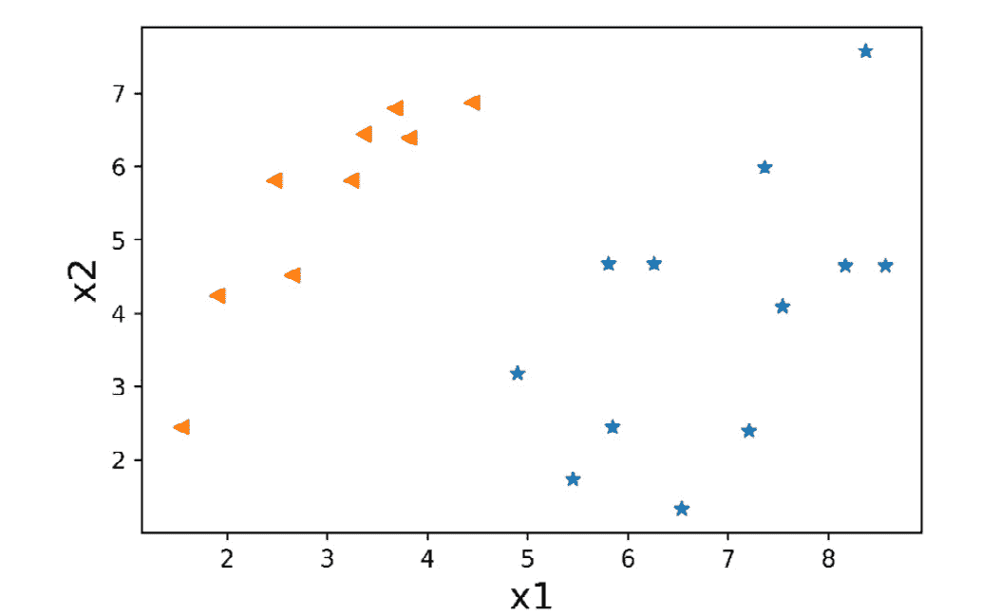图2.30:给定数据的散点图
- 通过分离特征和标签并设置
tf变量:x_input = df[['x1','x2']].values y_label = df[['label']].values
来准备数据 - Build the
Sequentialmodel:model = Sequential() model.add(Dense(units = 50,input_dim=2, activation = 'relu')) model.add(Dense(units = 20 , activation = 'relu')) model.add(Dense(units = 1,input_dim=2, activation = 'sigmoid'))
这里有几点需要考虑。我们为第一层提供输入细节，然后为所有中间层使用ReLU激活函数，如前所述。此外，最后一层只有一个神经元具有用于二元分类器的sigmoid激活函数。
- 使用
compile方法:model.compile(optimizer='adam', \ loss='binary_crossentropy', metrics=['accuracy'])
提供训练参数 - Inspect the
modelconfiguration using thesummaryfunction:model.summary()
输出如下所示:
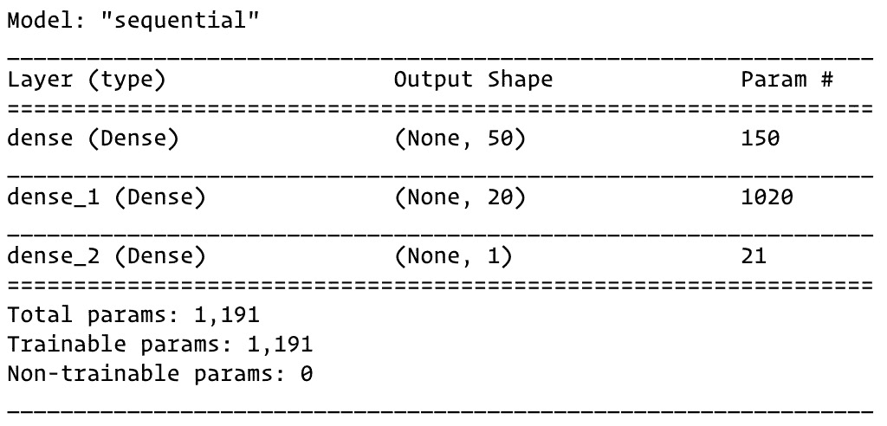图2.31:使用Keras的深度神经网络模型摘要
在模型总结中，我们可以看到总共有
1191个参数——权重和偏差——要跨隐藏层学习到输出层。 - Train the model by calling the
fit()method:model.fit(x_input, y_label, epochs=50)
请注意，在这种情况下，模型在
50个历元内达到100%的准确度，而单层模型需要大约1000个历元: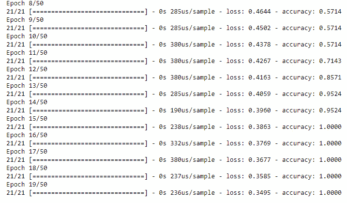图2.32:多层模型列车日志
- Let's evaluate the model's performance:
model.evaluate(x_input, y_label)
输出如下所示:
21/21 [==============================] - 0s 6ms/sample - loss: 0.1038 - accuracy: 1.0000 [0.1037961095571518, 1.0]
我们的模型现在已经被训练，并证明了100%的准确性。
注意
要访问该特定部分的源代码，请参考https://packt.live/2ZUkM94。
你也可以在https://packt.live/3iKsD1W在线运行这个例子。您必须执行整个笔记本才能获得想要的结果。
在本练习中，我们学习了如何使用Keras构建多层神经网络。这是一个二元分类器。在下一个练习中，我们将使用MNIST数据集为多类分类器构建一个深度神经网络。
练习2.07:使用Keras对MNIST进行深度神经网络训练
在本练习中，我们将通过为MNIST数据集实现深度神经网络(多层)来执行多类分类，其中我们的输入层包括展平为784个输入节点的28 × 28像素图像，后跟两个隐藏层，第一个具有50个神经元，第二个具有20个神经元。最后，将有一个由10个神经元组成的Softmax层，因为我们将手写数字分为10类:
- 导入所需的库和包:
import tensorflow as tf import pandas as pd import matplotlib.pyplot as plt %matplotlib inline # Import Keras libraries from tensorflow.keras.models import Sequential from tensorflow.keras.layers import Dense from tensorflow.keras.layers import Flatten
- Load the MNIST data:
mnist = tf.keras.datasets.mnist (train_features,train_labels), (test_features,test_labels) = \ mnist.load_data()
train_features具有28×28像素值形式的训练图像。train_labels有培训标签。类似地，test_features具有28×28像素值形式的测试图像。test_labels有测试标签。 - Normalize the data:
train_features, test_features = train_features / 255.0, \ test_features / 255.0图像的像素值范围为0-255。我们需要通过将这些值除以255来使它们正常化，以便范围从0到1。
- Build the
sequentialmodel:model = Sequential() model.add(Flatten(input_shape=(28,28))) model.add(Dense(units = 50, activation = 'relu')) model.add(Dense(units = 20 , activation = 'relu')) model.add(Dense(units = 10, activation = 'softmax'))
有几点需要注意。在这种情况下，第一层实际上不是一层神经元，而是一个
Flatten功能。这将28 x 28的图像展平成一个单一的784阵列，该阵列被输入到第一个隐藏的50神经元层。最后一层具有对应于具有softmax激活函数的10个类别的10神经元。 - Provide training parameters using the
compilemethod:model.compile(optimizer = 'adam', \ loss = 'sparse_categorical_crossentropy', \ metrics = ['accuracy'])注意
这里使用的损失函数不同于二元分类器。对于多类分类器，使用下面的损失函数:
sparse_categorical_crossentropy，当标签不是一次性编码时使用，如在这种情况下；以及categorical_crossentropy，当标签被一键编码时使用。 - Inspect the model configuration using the
summaryfunction:model.summary()
输出如下所示:
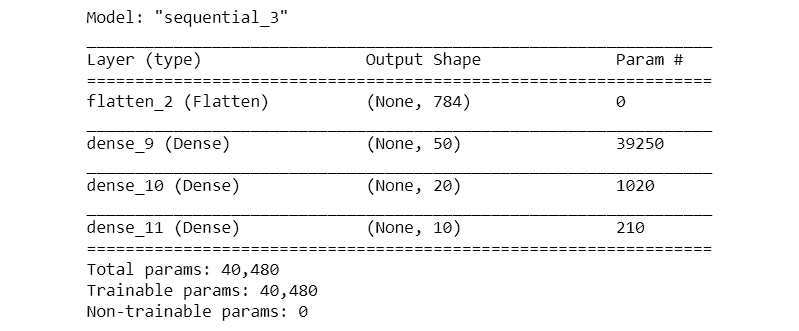图2.33:深度神经网络摘要
在模型摘要中，我们可以看到总共有40，480个参数—权重和偏差—要跨隐藏层学习到输出层。
- Train the model by calling the
fitmethod:model.fit(train_features, train_labels, epochs=50)
输出如下所示:
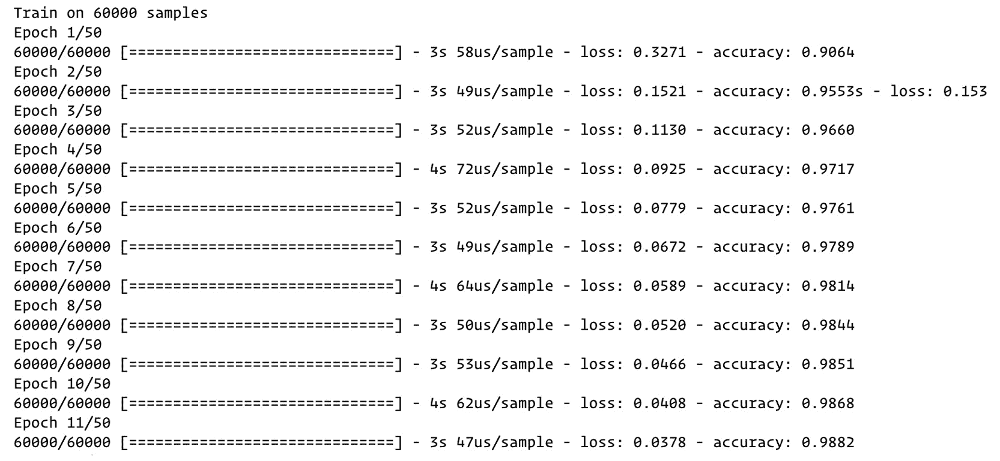图2.34:深度神经网络训练日志
- Test the model by calling the
evaluate()function:model.evaluate(test_features, test_labels)
输出将是:
10000/10000 [==============================] - 1s 76us/sample - loss: 0.2072 - accuracy: 0.9718 [0.20719025060918111, 0.9718]
既然模型已经过训练和测试，在接下来的几个步骤中，我们将使用随机选择的一些图像来运行预测。
- 从测试数据集中加载随机图像。让我们定位第200张图片:
loc = 200 test_image = test_features[loc]
- Let's see the shape of the image using the following command:
test_image.shape
输出是:
(28,28)
我们可以看到图像的形状是28 x 28。但是，该模型需要三维输入。我们需要相应地重塑形象。
- 使用以下代码重塑图像:
test_image = test_image.reshape(1,28,28)
- Let's call the
predict()method of the model and store the output in a variable calledresult:result = model.predict(test_image) print(result)
result已经以10个概率值的形式输出，如下所示:[[2.9072076e-28 2.1215850e-29 1.7854708e-21 1.0000000e+00 0.0000000e+00 1.2384960e-15 1.2660366e-34 1.7712217e-32 1.7461657e-08 9.6417470e-29]]
- The position of the highest value will be the prediction. Let's use the
argmaxfunction we learned about in the previous chapter to find out the prediction:result.argmax()
在这种情况下，是
3:3
- In order to check whether the prediction is correct, we check the label of the corresponding image:
test_labels[loc]
同样，该值为
3:3
- We can also visualize the image using
pyplot:plt.imshow(test_features[loc])
输出如下所示:
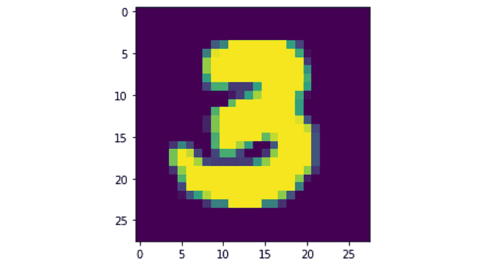
图2.35:可视化的测试图像
这表明预测是正确的。
注意
要访问该特定部分的源代码，请参考https://packt.live/2O5KRgd。
你也可以在https://packt.live/2O8JHR0在线运行这个例子。您必须执行整个笔记本才能获得想要的结果。
在本练习中，我们使用Keras创建了一个多层多类神经网络模型来对MNIST数据进行分类。利用我们建立的模型，我们能够正确地预测一个随机的手写数字。
探索神经网络的优化器和超参数
训练神经网络以获得良好的预测需要调整许多超参数，如优化器、激活函数、隐藏层的数量、每层中神经元的数量、时期的数量和学习速率。让我们一个一个地来详细讨论它们。
梯度下降优化器
在e 现在是更详细地探索梯度下降优化器的好时机。我们将提供一个直观的解释，而不涉及数学细节。
梯度下降优化器的功能是最小化损失或误差。为了理解梯度下降是如何工作的，你可以想到这个类比:想象一个在山顶的人想要到达底部。刚开始训练的时候，损耗很大，就像小山的顶峰的高度。优化器的功能类似于一个人下山到谷底的山谷，或者说是山的最低点，而不是爬上山谷另一边的山。
还记得我们在创建优化器时使用的学习率参数吗？这可以比作一个人爬下山的步伐大小。如果这些台阶很大，在开始时还好，因为这个人可以爬得更快，但是一旦他们接近底部，如果台阶太大，这个人就会越过山谷的另一边。然后，为了爬回谷底，这个人会试着往回走，但会再次移动到另一边。这导致来回移动而没有到达谷底。
另一方面，如果一个人迈出很小的步伐(一个很小的学习速度)，他们将永远到达谷底；换句话说，这个模型永远不会收敛。所以，找到一个既不太小也不太大的学习率非常重要。然而，不幸的是，没有预先找出正确值的经验法则——我们必须通过反复试验来找到它。
基于梯度的优化器主要有两种类型:批处理和随机梯度下降。在我们开始之前，让我们回忆一下，一个时期意味着一次训练迭代，其中神经网络遍历所有的训练示例:
- 在一个历元中，当我们减少所有训练样本的损失时，它被称为批量梯度下降。这也被称为全批次梯度下降。简而言之，在经历了一整批之后，我们采取一个步骤来调整网络的权重和偏差，以减少损失并改善预测。有一种类似的形式叫做小批量梯度下降，我们采取步骤，也就是说，我们在浏览完整数据集的子集后，调整权重和偏差。
- 与批量梯度下降相反，当我们在每次迭代中的一个例子上迈出一步时，我们有随机梯度下降 ( SGD )。单词随机告诉我们这里涉及到随机性，在这种情况下，就是随机选择的批次。
虽然SGD工作得相对较好，但有一些高级优化器可以加快训练过程。他们包括有动力的SGD，Adagrad和Adam。
消失的渐变问题
在训练感知器部分，我们学习了神经网络的前向和后向传播。当神经网络执行前向传播时，相对于真实标签计算误差梯度，并且执行后向传播以查看神经网络的哪些参数(权重和偏差)对误差有贡献以及它们对误差的贡献程度。误差梯度从输出层传播到输入层，以计算关于每个参数的梯度，并且在最后一步中，执行梯度下降步骤，以根据计算的梯度调整权重和偏差。随着误差梯度向后传播，随着向较低(初始)层推进，在每个参数处计算的梯度变得越来越小。梯度的减小意味着权重和偏差的变化变得越来越小。因此，我们的神经网络努力寻找全局最小值，并且没有给出好的结果。这就是所谓的消失梯度问题。使用sigmoid(逻辑)函数作为激活函数会出现问题，因此我们使用ReLU激活函数来训练深度神经网络模型，以避免梯度复杂性并改善结果。
超参数调谐
像机器学习中的任何其他模型训练过程一样，可以执行超参数调整来提高神经网络模型的性能。其中一个参数是学习率。其他参数如下:
- 周期数:增加周期数通常会提高精度并降低损耗
- 层数:增加层数可以提高精确度，就像我们在MNIST的练习中看到的那样
- 每层神经元的数量:这也增加了精确度
同样，也没有办法预先知道正确的层数或每层神经元的数量。这必须通过反复试验来解决。必须注意，层数越多，每层的神经元数量越多，所需的计算能力就越大。因此，我们从尽可能小的数字开始，慢慢增加层数和神经元数。
过度拟合和脱扣
神经网络具有复杂的架构，太多的参数往往适合所有的数据点，包括嘈杂的标签，导致过度拟合的问题，神经网络无法在看不见的数据集上进行很好的概括。为了解决这个问题，有一种技术叫做辍学:
图2.36:图示辍学
在这种技术中，一定数量的神经元在训练过程中被随机去激活。要去激活的神经元的数量以百分比的形式作为参数提供。例如，Dropout = .2表示该层中20%的神经元将在训练过程中被随机去激活。相同的神经元不会被去激活超过一次，但是在每个时期中不同组的神经元被去激活。然而，在测试过程中，所有的神经元都被激活了。
以下是我们如何使用Keras将Dropout添加到神经网络模型的示例:
model.add(Dense(units = 300, activation = 'relu')) #Hidden layer1 model.add(Dense(units = 200, activation = 'relu')) #Hidden Layer2 model.add(Dropout(.20)) model.add(Dense(units = 100, activation = 'relu')) #Hidden Layer3
在这种情况下，Hidden Layer2增加了20%的退学率。没有必要将漏接添加到所有层。作为一名数据科学家，您可以试验并决定dropout值应该是多少以及需要多少层。
注意
Nitish Srivastava等人的论文对辍学有更详细的解释，可在此处查阅:http://www . jmlr . org/papers/volume 15/Srivastava 14 a/Srivastava 14 a . pdf。
在本章即将结束之际，让我们通过下面的活动来检验一下我们目前所学的内容。
活动2.01:建立一个多层神经网络来分类声纳信号
在本活动中，我们将使用声纳数据集(https://archive . ics . UCI . edu/ml/datasets/Connectionist+Bench+(Sonar，+Mines+vs.+Rocks) )，它具有通过在各种角度和各种条件下从金属圆柱体反弹声纳信号获得的模式。您将构建一个基于神经网络的分类器，对从金属圆柱体(水雷类)反射的声纳信号和从大致圆柱形的岩石(岩石类)反射的声纳信号进行分类。我们建议使用Keras API使您的代码更具可读性和模块化，这将允许您轻松地试验不同的参数:
注意
你可以从这个链接下载声纳数据集https://packt.live/31Xtm9M。
- 第一步是理解数据，这样你就能搞清楚这是二分类问题还是多类分类问题。
- Once you understand the data and the type of classification that needs to be done, the next step is network configuration: the number of neurons, the number of hidden layers, which activation function to use, and so on.
回想一下我们到目前为止已经介绍过的网络配置步骤。我们就重申一个至关重要的点，激活函数部分:对于输出(最后)层，我们用sigmoid做二分类，用Softmax做多类分类。
- 打开
sonar.csv文件，浏览数据集，看看目标变量是什么。 - 分离输入要素和目标变量。
- 预处理数据，使其与神经网络兼容。提示:一键编码。
- 使用Keras定义一个神经网络，并用正确的损失函数编译它。
- 打印出模型总结，以检验网络参数和注意事项。
通过使用这些步骤设计一个合适的多层神经网络，您有望获得95%以上的精度值。
注意
本练习的详细步骤以及解决方案和附加注释在第390页介绍。
总结
在这一章中，我们从观察生物神经元开始，然后转向人工神经元。我们看到了神经网络是如何工作的，并采取了一种实用的方法来构建单层和多层神经网络，以解决监督学习任务。我们研究了感知器是如何工作的，它是神经网络的一个单元，一直到能够执行多类分类的深度神经网络。我们看到了Keras如何用最少的代码轻松创建深度神经网络。最后，我们研究了在构建一个成功的神经网络时需要考虑的实际问题，这涉及到一些重要的概念，如梯度下降优化器、过拟合和辍学。
在下一章中，我们将进入下一个阶段，建立一个更复杂的神经网络，称为CNN，广泛用于图像识别。